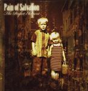

Home Artist links Label link

| Artist: | Pain Of Salvation |
| Title: | The Perfect Element 1 |
| Label: | Inside Out IOMCD067 |
| Length(s): | 72 minutes |
| Year(s) of release: | 2000 |
| Month of review: | 10/2000 |
Line up
Daniel Gildenloew - guitars, vocals
Johan Hallgren - guitars
Kristoffer Gildenloew - bass
Fredrik Hermansson - keyboards
Johan Langell - drums
Tracks
| 1) | Used | 5.23
|
| 2) | In The Flesh | 8.36
|
| 3) | Ashes | 4.28
|
| 4) | Morning On Earth | 4.34
|
| 5) | Idioglossia | 8.29
|
| 6) | Her Voices | 7.56
|
| 7) | Dedication | 4.00
|
| 8) | King Of Loss | 9.46
|
| 9) | Reconciliation | 4.24
|
| 10) | Song For The Innocent | 3.02
|
| 11) | Falling | 1.50
|
| 12) | The Perfect Element | 10.09
|
Summary
This band was and is responsible for one of the best progmetal albums ever,
One Hour By The Concrete Lake. Not surprisingly I was looking forward to the
longawaited follow-up, which like its predecessor is a concept album. Since
I do not have a booklet however, I have little idea what it is about. I'll leave
that to yourself to find out. Please note that this album is part one of
two.
The music
Used opens the album forcefully with lots of bombasm. Then we come to the
aggressive vocal part (in the style of Faith No More). The chorus is sung
in a different fashion altogether, very melodiuous and quite high as well.
It is hard to imagine that we have the same person singing here. Back to
heavy passage of earlier with heavy bass and guitar. The intro then returns
with rolling drums and we move into a rather relaxed guitar solo and on to
the first chaotic climax, showing what a great singer Gildenloew really is.
More relaxed is In The Flesh. Long drawn vocal passages are alternated with
some more groovy parts and again the soulful vocals of Gildenloew are in the
lead. The chaotic parts now fall slightly before the end, so that the song
can end on a balladic note with acoustic guitar.
Ashes is the single of the album with drawn out vocals and an extremely
memorable chorus. Washes of drums and keyboards overrun the manic guitar
at the end. Morning On Earth opens quietly with soft percussion and vocals,
taking a melody line of earlier on (hey, this is a concept album).
Idioglossia combines some of the vocal parts of Ashes with bitten off vocals
in the style of Faith No More. The electric guitar has a more bluesy style
and the hammered piano is also nice. The song alternates between a rather
friendly bouncy pace and the aggressive vocals parts a la Mike Patton.
Her Voices continues the majestic line of this album with heavy sharp chords
alternating with easy-going, groovy vocal passages and elements of a piano
ballads. The impact of the music is very strong (Never Forget...) comparable
to that of Brave. Then we get a break into something Middle-Eastern sounding
with percussion and then a speed-up in that same style and a genial part
using violin and choirs right at the end. Fantastic.
In Dedication we take a step back for a mor ballad like approach. The longish
King Of Loss opens with soulful vocals and tinkling piano with sitar like
tones. A great composition with many sides to it. In a way I'm reminded of
Led Zeppelin here, possibly because of the Kashmirian influences. The vocal
parts are really overpowering with the emotions of aggression and the more
subtle emotions overflooding. Heavy. Song For The Innocent lets us revisit
a tune of earlier on, slight faster paced. The dark, low vocals show that
Gildenloew also has a future in acting (I do remember that his favourite
piece of music is Jesus Christ Superstar). In this track many musical lines
run together. The next one Song For The Innocent is another highpoint (yes,
they keep on coming) and follow-up Falling is a short instrumental sad overture
to the closer, the ten-minute The Perfect Element. This track contains
another great climax in the middle, giving the well-known but not often
experienced goose bumps. The song ends with loud percussion almost introducing
the next part of the story, still to come.
Conclusion
When I had first listened to this album I was disappointed, very disappointed.
It seemed the band had dropped their "own" dark style of One Hour By The
Concrete Lake in favour of a more typical progmetal sound, but a few extra
listens dispelled my doubts: although less darker and atmospheric than the
predecessor this is THE progmetal release of this year. Do not misunderstand
me, I do like Fates Warning, Savatage, Rhapsody and Metropolis by Dream Theater
is not bad, but this band is to me the best progmetal band around delivering
a long piece of music rich in emotion, melody with a great variety in vocal
techniques. Something every selfrespecting progmetal lover should own (and
while we are at it, every fan of Faith No More and, yes, why not every
progrocker who doesn't mind a heavy guitar as well).
© Jurriaan Hage